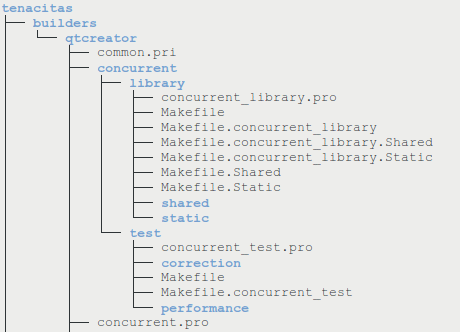

Build Structure
The tenacitas repository directory structure allows different build tools to be used to build any of its components. This is accomplished by having the code in a separate directory tree from the build tools configured.
For example, the build structure for QtCreator for the concurrent project is implemented like this:

The concurrent_library.pro and concurrent_test.pro are the project files used by QtCreator, and the common.pri contains definitions used by all the project files.
So, anyone can create a new build structure for a specific build system, like Eclipse, Visual Studio or GNU Makefile.